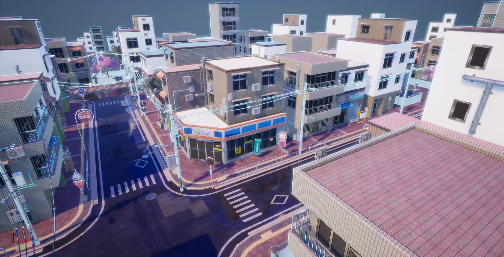
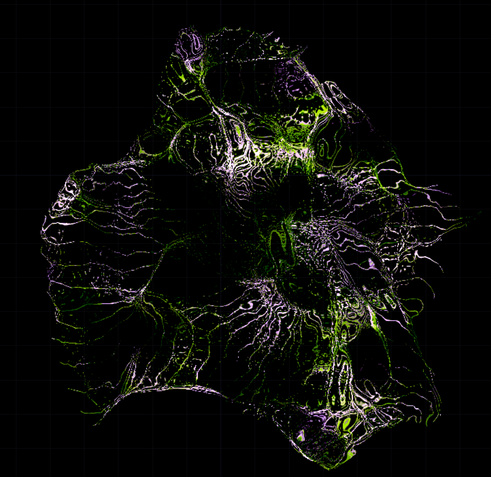
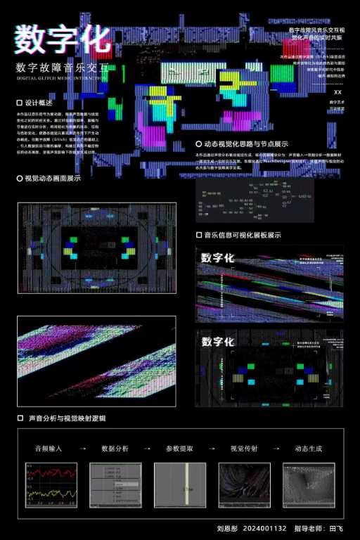
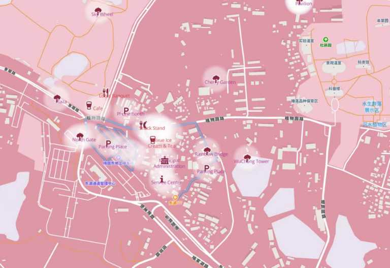

Digital space · UE5
A collection of explorations across digital environments, generative visuals, information and space. Interested in the connections between visual language, technology and experience.




Exploring how images, information and technology can shape the way we see and experience the world.
I am an Art & Technology student interested in visual communication, digital media and experimental design. This portfolio brings together selected studies and projects that explore different ways of translating ideas into visual and spatial experiences.